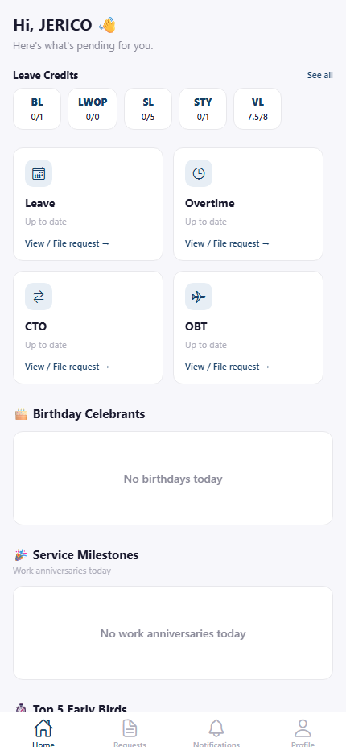

Home / Dashboard
The first tab you land on after signing in — a snapshot of what needs your attention.

Greeting with today's date, one-tap Quick Actions for Leave/Overtime/CTO/OBT/Attendance, leave credit balances with progress bars, Today's Celebrations (birthdays & work anniversaries), Early Check-Ins (Top 5 / Daily toggle), upcoming holidays, and the company calendar.
Frequently Asked Questions
Common questions about Home / Dashboard.
They're one-tap shortcuts to filing a new Leave, Overtime, CTO, or OBT request, or jumping straight to My Attendance — the same destinations as the Requests Hub and the bottom-tab "+" button.
"Top 5" ranks the five employees with the earliest average time-in over the past 7 days. "Daily" instead shows who was first in the door each individual day over that same period.
No, the Home tab shows a fixed set of widgets for every employee.